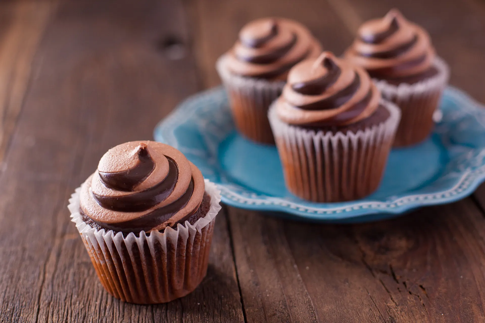

Back to Home Page
My Favorite Recipes
Instant Pot Creamy Mac & Cheese
Total Time: 15 minutes
Ingredients: 14
Servings: 8-10

INGREDIENTS
- lb dry macaroni noodles
- 4 cups water
- 4 tablespoons butter, diced
- 1 teaspoon salt
- 1 teaspoon ground mustard
- 1 teaspoon garlic powder
- 1 teaspoon onion powder
- 1 (5 ounce) can evaporated milk
- 1⁄2 cup whole milk
- 2 cups shredded cheddar cheese
- 2 cups shredded mozzarella cheese
- 3 ounces cream cheese, diced
- 1⁄2 teaspoon black pepper
- 1⁄4 teaspoon chili powder or 1/4 teaspoon cayenne pepper
DIRECTIONS
-
Combine the pasta, water, butter, salt, mustard, garlic powder
and onion powder in a 6-quart Instant Pot.
Lock on the lid and set to pressure cook on high for 5 minutes.
Allow the pressure to naturally release for 10 minutes,
then manually release any residual pressure.
-
Carefully open the lid and turn on the sauté function.
Stir in the evaporated milk, whole milk, cheddar, mozzarella,
cream cheese, black pepper and chili powder until the cheese has
melted and is creamy. Turn off the pressure cooker and
serve warm.
-
Tip: If you want a golden brown topping, you can transfer the
mac and cheese to a casserole dish. Top with cheese and bread
crumbs, then place under the broiler until golden brown.
Croissants
Total Time: 16 hours 20 mins
Ingredients: 13
Yields: 20

INGREDIENTS
FOR THE PREFERMENT
- 3⁄4 cup warm water (100 degrees)
- 1⁄8 teaspoon active dry yeast
- 9 ounces all-purpose flour (2-cups)
FOR THE FINAL DOUGH
- 1⁄4 cup warm water (100 degrees)
- 3⁄4 cup milk
- 6 tablespoons sugar
- 4 1⁄2 teaspoons active dry yeast
- 11 1⁄4 ounces all-purpose flour (2 1/2 cups)
- 1 3⁄4 ounces unsalted butter, softened at room temp.
- 10 ounces unsalted butter, chilled
DIRECTIONS
- Mix preferment, rest 12 hours until tripled in size.
- Make dough with milk, butter, flour; knead, rise 1 hr.
- Encase butter, roll and fold 3 times, chilling between.
- Cut triangles, roll into croissants, proof 1 hour.
- Brush with egg wash, bake 375°F for 18–20 minutes.
Special Mocha Cupcakes
Total Time: 45 minutes
Ingredients: 16
Servings: 12

INGREDIENTS
- 1 1⁄2 cups flour
- 1 cup sugar
- 1⁄3 cup baking cocoa
- 1 teaspoon baking soda
- 1⁄2 teaspoon salt
- 2 eggs
- 1⁄2 cup cold brewed coffee
- 1⁄2 cup vegetable oil
- 3 teaspoons cider vinegar
- 3 teaspoons vanilla extract
MOCHA FROSTING
- 3 tablespoons semi-sweet chocolate chips
- 3 tablespoons milk chocolate chips
- 1⁄3 cup butter, softened
- 2 cups confectioners' sugar
- 1-2 tablespoon brewed coffee
- 1⁄2 cup chocolate sprinkles
DIRECTIONS
-
In a small mixing bowl, combine the flour, sugar, cocoa,
baking soda and salt. In a small bowl, mix the eggs, coffee,
oil, vinegar and vanilla.
- Add to dry ingerdients; mix well.
- Fill paper-lined muffin cups three-fourths full.
-
Bake at 350 for 20-25 minutes or until a toothpick comes
out clean.
-
Cool for 10 minutes before removing from pan to a wire rack
to cool.
-
For frosting, in a small microwave-safe bowl, melt chips;
stir until smooth.
- Add butter; beat until blended.
- Gradually beat in confectioners' sugar and coffee.
- Pipe frosting onto cupcakes.
- Top with sprinkles; gently press down.